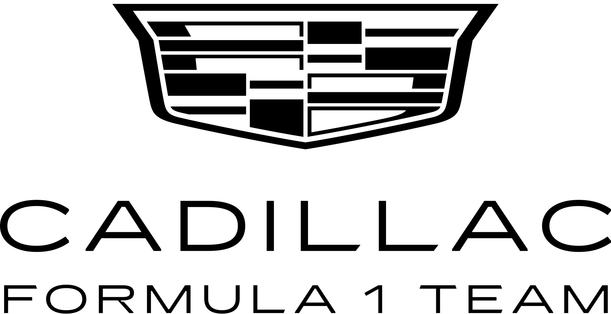
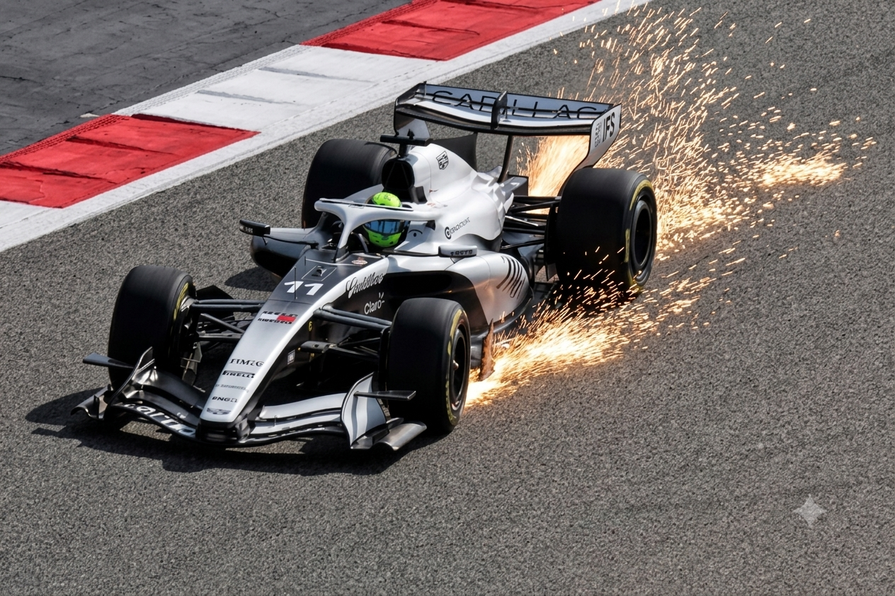

01
2026 — PRESENTE
CADILLAC
THE AMERICAN ICON↗
Carregando notícias...

CADILLAC FORMULA 1 TEAM
Conheça a dupla que representa a Cadillac na Formula 1.
A Cadillac chega à Fórmula 1 como parte de uma nova geração de fabricantes interessados em disputar espaço na categoria mais tecnológica do automobilismo.
Com forte identidade americana, a equipe promete unir inovação, potência e presença global em um projeto ambicioso para o futuro da Fórmula 1.
O objetivo da Cadillac é construir uma estrutura competitiva capaz de representar os Estados Unidos no mais alto nível do esporte mundial.

A Cadillac chega à Fórmula 1 representando tecnologia, inovação e a força da engenharia americana. Com uma nova estrutura focada em desenvolvimento de longo prazo, a equipe busca construir um projeto competitivo capaz de evoluir rapidamente no grid.
Com investimentos em infraestrutura, aerodinâmica, simuladores e desenvolvimento técnico, a Cadillac pretende criar uma equipe moderna preparada para disputar posições importantes na Fórmula 1 nos próximos anos.
A Cadillac leva para a Fórmula 1 a tradição da indústria automotiva americana, combinando potência, inovação e tecnologia de ponta.
O projeto da equipe nasce com o objetivo de crescer rapidamente e se tornar uma das principais forças da Fórmula 1 moderna.
Desenvolvimento contínuo, análise de dados e inovação técnica fazem parte da estratégia para evoluir temporada após temporada.
A Cadillac representa luxo, desempenho e tecnologia avançada. Sua entrada na Fórmula 1 marca o início de uma nova era americana dentro do esporte.
A Cadillac entra na Fórmula 1 com um projeto moderno focado em desenvolvimento técnico, inovação e crescimento competitivo. A estrutura da equipe foi criada para reunir engenharia avançada, simulações e análise de performance em um ambiente preparado para o futuro da categoria.
Com investimentos em infraestrutura, aerodinâmica e tecnologia de ponta, a equipe busca construir uma base sólida para evoluir rapidamente dentro do grid e disputar posições importantes nos próximos anos.
A Cadillac desenvolve uma operação focada em eficiência, inovação e integração total entre engenharia e performance.
Simuladores, análise de dados e evolução aerodinâmica fazem parte da estratégia para acelerar o crescimento da equipe.
O objetivo da Cadillac é construir uma equipe competitiva a longo prazo e se tornar uma referência da nova geração da Fórmula 1.
“O futuro da performance começa com inovação.”
A Cadillac combina tradição automotiva, tecnologia e ambição para iniciar sua trajetória na Fórmula 1.
Das origens à atual Cadillac na Fórmula 1.
| 🏎️ Chassi Atual | MAC26 |
| ⚙️ Motor Atual | Ferrari |
| 📅 Fundação | 2026 |
| 📍 Sede | Fishers – Estados Unidos |
| 🥇 Primeira Corrida | Australia – 2026 |
| 🏆 Melhor Resultado | Valteri Bottas 🇫🇮 – 13° (China) |
| 🔥 Melhor posição de Largada | Sergio Perez 🇲🇽 - Australia(2026) |
| 👬 Dupla Atual |
Sergio Perez 🇲🇽 Valteri Bottas 🇫🇮 |
Posição campeonato
Pontos
Pódios
Vitórias
Top 5
Avg Grid
| Etapa | GP | Perez | Bottas |
|---|
CADILLAC 2026
Cadillac
Formula 1 championship points evolution

Responsável pela direção geral e investimentos da equipe.

Chefe de equipe responsável pelas decisões esportivas e estratégicas.

Lidera o desenvolvimento técnico do carro em parceria com a Ferrari.

Coordena as estratégias durante as corridas.

Responsável pelo desenvolvimento aerodinâmico do carro.
Coordena o design e estrutura do carro.

Responsável pela integração técnica e funcionamento do carro.
Foco em extrair o máximo desempenho do carro durante o fim de semana.
A Cadillac une engenharia americana, inovação e tecnologia avançada para construir sua entrada na Fórmula 1. Cada setor da equipe trabalha em conjunto para transformar desenvolvimento técnico, estratégia e performance em resultados dentro das pistas.
Representam a equipe nas pistas e ajudam os engenheiros a desenvolver o carro durante toda a temporada.
A Cadillac investe em jovens talentos para construir uma base forte para o futuro da equipe na Fórmula 1.
Analisa ritmo de corrida, pneus e equilíbrio do carro para extrair o máximo desempenho em cada GP.
Coordena ajustes, comunicação com os pilotos e decisões técnicas durante os fins de semana de corrida.
Desenvolve soluções para melhorar downforce, eficiência e estabilidade em curvas e retas.
Responsáveis pela montagem dos carros, manutenção e execução precisa dos pit stops.
Analisa desgaste de pneus, safety cars e cenários de corrida para definir as melhores decisões.
Monitora milhares de informações em tempo real para avaliar performance e comportamento do carro.
Busca novas soluções técnicas para acelerar a evolução da Cadillac dentro do grid.
Sistemas avançados ajudam na análise de dados, simuladores e desenvolvimento do carro.
Coordena o transporte de carros, peças e equipamentos pelo mundo durante toda a temporada.
Fortalece a identidade da Cadillac e aproxima a equipe dos fãs globalmente.
Nos Estados Unidos e em parceria com centros avançados de engenharia, inovação e desenvolvimento trabalham juntos para criar cada novo carro da Cadillac na Fórmula 1. O processo envolve simulações avançadas, estudos aerodinâmicos e evolução constante em busca de desempenho máximo.
O desenvolvimento começa com estudos aerodinâmicos e análise de performance para encontrar equilíbrio, eficiência e competitividade.
Engenheiros utilizam softwares avançados para criar modelos virtuais e testar diferentes soluções antes da produção.
A equipe ajusta a aerodinâmica para melhorar downforce, estabilidade e velocidade em diferentes tipos de circuito.
Materiais leves e resistentes são utilizados para garantir segurança, rigidez estrutural e máxima performance.
Pilotos e engenheiros trabalham juntos ajustando comportamento, equilíbrio e dirigibilidade do carro.
Durante toda a temporada, novas atualizações são desenvolvidas para buscar ganhos constantes de desempenho.
“Na Cadillac, cada detalhe é desenvolvido para transformar inovação em velocidade.”

🏁 Corridas
🥇 Top 10
🥇 q3
⚡ q2
📈 Pontos no Total